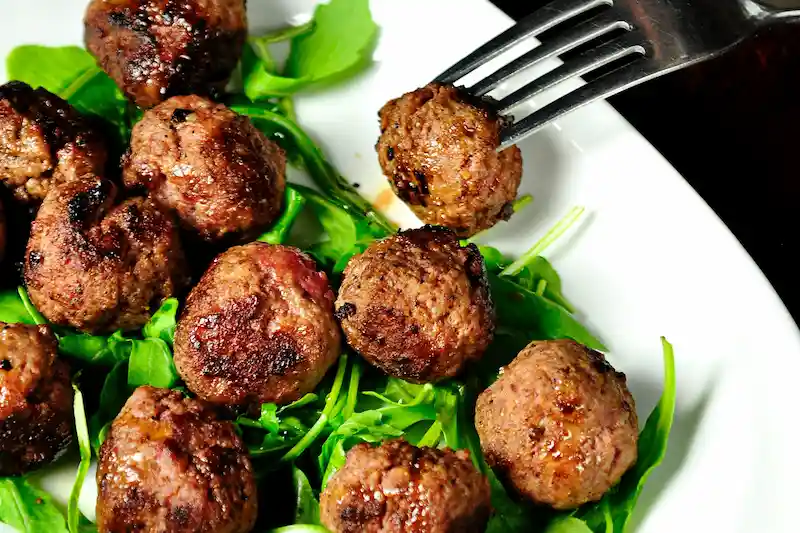

Let's cook with Andreas Lor!
"My favorite baked meatball recipe — it’s easy to make, full of great flavor, and incredibly versatile."
I also love these homemade meatballs because they are baked instead of fried,
which makes them a touch healthier and also considerably easier to cook.
They can easily be made gluten-free if you would like. They freeze beautifully for later, if you would like.
Basically, this is the meatball recipe that I use for pretty much everything and it is always, always a winner.
So be sure to bookmark this one, and let’s make a batch together!
read the full recipe
Let's cook with Andreas Lor!
"My baked meatball recipe — it’s easy to make, full of great flavor, and incredibly versatile."
I also love these homemade meatballs because they are baked instead of fried,
which makes them a touch healthier and also considerably easier to cook.
They can easily be made gluten-free if you would like. They freeze beautifully for later, if you would like.
Basically, this is the meatball recipe that I use for pretty much everything and it is always, always a winner.
So be sure to bookmark this one, and let’s make a batch together!
read the full recipe